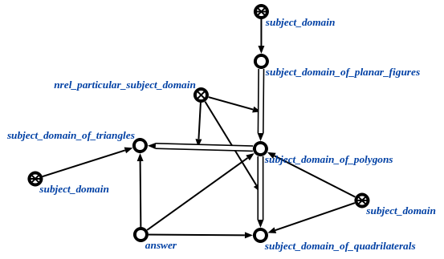

Задачей scp-программы поиска всех подразделов заданной предметной области
является поиск всех частных предметных областей, относящихся к заданной предметной области. Первым входным параметром данной scp-программы является предметная область, у которой мы ищем частные предметные области, вторым входным параметром является множество, куда будут занесены все найденные предметные области. В ходе выполнения программы явно указывается связь со следующими ключевыми узлами: с отношением частная предметная область*
Ниже представлены результаты выполнения процедуры:
